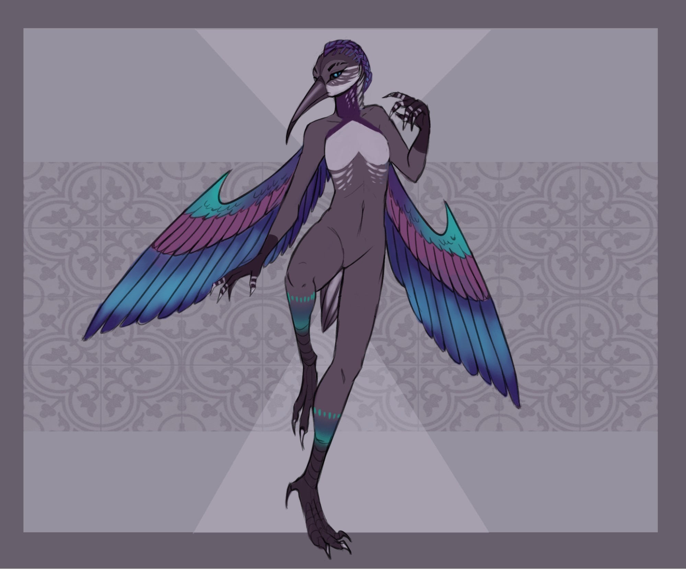
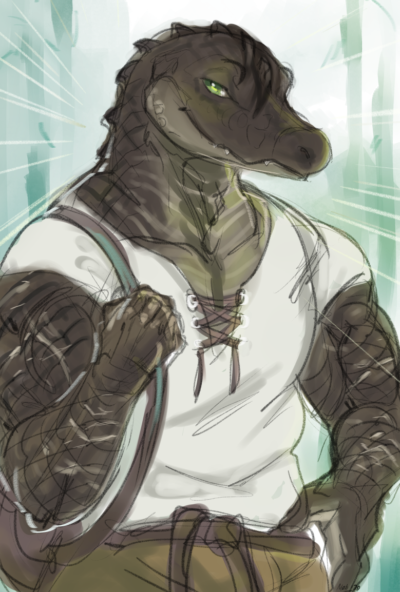
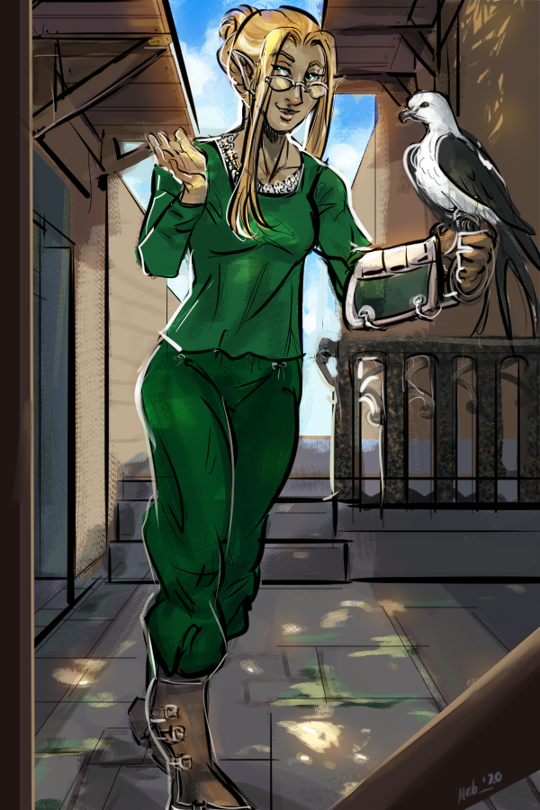
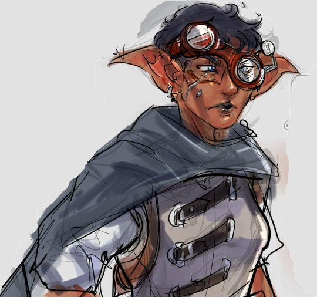
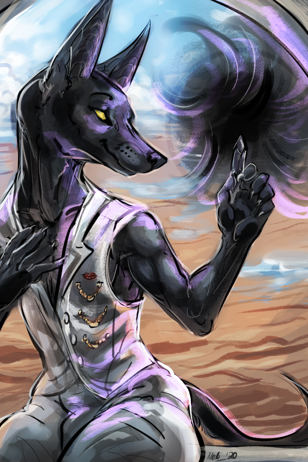
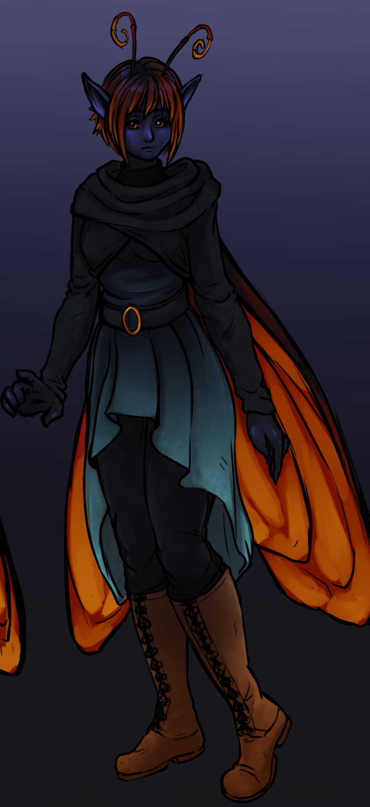
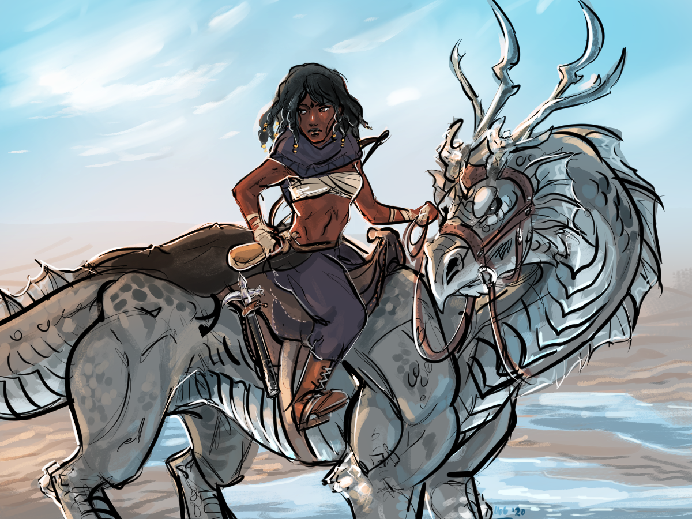

Races
Colibri
A small species that live primarily on the west side of the country in the planes and forests. They are often called Harvesters or Gardners as colloquial nicknames. They resemble anthropomorphic hummingbirds and are capable of extremely deft flight. Within Estrella they are food producers, both honey and fruits primarily.
Small-sized
This species lacks sexual dimorphism in height and weight
Males of this species are slightly more vibrant and tend to have an iridescent band of color on their wings, while the females are matte grey in the same location.
They average 2'9'' to 3'7'' in height and weigh between 35-70 lbs.
Creation Information
Attribute Modifications: -2 con, +2 Int
Fly Speed: 40 ft (Perfect)
Special: Pick two skills and add a +2 species bonus to them, these will increase for every 3 HD

Art and Design by Sapho Berga, rights reserved by TheSpiralAim
Crockokin
Living in the swamps of Colomancha, and typically running sturgeon farms, the Crockokin live with their cousins the Varanakin. Despite having such a different culture from the rest of Estrella, they are fiercely loyal to the republic.
Medium Sized
This species lacks sexual dimorphism
Members of this species lack obvious primary and secondary sex characteristics. It is difficult to discern the sex of a Varankin without physical examination, which is considered quite rude.
They average 6'4' to 7'3" Weights range from 350-500 lbs, and typically are quite lithe at these weights due to high muscle density.
Creation Information
Attribute Modifications: +2 Str, -2 Cha
Natural Armor +2
Special: Swim Speed 30 ft, gain a bonus feat at first level

Custom
Always be willing to build a custom race with any player should they desire it. Typically the patterns are Ability scores +4, -2, and some sort of progression bonus. e.g. A bonus feat, bonus skill points, an extra ability, or extra definitions. Sometimes the ability scores will be less due to extra features; like flying or natural armor. Other times extra bonuses are also given, like dark vision, but this is underwhelming enough not to reduce another bonus.
Elf
Elves in Estrella have a longer view of history and knowledge of the culture, rather than their fast-lived countrymen. Typically occupying positions in cultural institutions they try to guide the arts, philosophies, and principles of the country with a gentle, if not condescending, touch. Elves are very rarely found outside of cities and balk at the idea of living in planes, deserts, or mountains.
Creation Information
Medium Sized
Heights are sexually dimorphic
Females range from 4’3’’ to 5’4’’’ examples beyond either threshold are very rare
Males range from 4’8’’ to 5’9’’ examples beyond either threshold are very rare.
Weight is rather variable and dependent on height. A healthy average female will weigh around 70-120 lbs. A healthy average male will weigh around 90-140 lbs.
Attribute Modifications: +4 Dex, -2 Constitution
Special: Gain an extra feat and Gain low light vision

Goblin
Living primarily within the rim and underneath the high peaks region of Estrella, the goblins are known to be isolationist from the rest of the Estrella citizenry, primarily due to a proclivity for living underground and within cave systems. The grand majority of technological development in the past century has stemmed out of the goblin cities found within The Rim. They are a matriarchal society, sort of. The region is run democratically and does send representatives to the Estrella senate. These tend to be highly astute females, as their culture tends to value beautiful goblins over all else. As the saying goes, "Goblin men think with the wrong head."
Creation Information
Small Sized
Heights range from 3’ to 3'8" examples beyond either threshold are very rare
Weight varies a bit more depending on body build. This can range from 55-80 lbs
Attribute Modifications: -2 Strength, +2 Dex, and +2 Intelligence.
Proficiency: Automatically proficient with goblin weaponry
Special: Gain a bonus feat at first level and +1 base skill growth.

Ha-seht
A canid species found primarily in the Salt of the country. They have short black, or gold, fur, wiry bodies, tall and pointed ears. They are most known for their strong proclivity for success in business as well as vicious family feuds. This occurs both between families and within families, especially if there is a conflict of business interest. They are particularly gifted with magics and have a high rate of being naturally talented with them.
Medium size
Heights are sexually dimorphic
Females range from 4’11’’ to 5’10’’’ examples beyond either threshold are very rare
Males range from 5’2’’ to 6’8’’ examples beyond either threshold are very rare.
Weight is rather variable and dependent on height. A healthy average female will weigh around 85 - 145 lbs. A healthy average male will weigh around 100-180 lbs.
Creation Information
Attribute Modifications: -2 con, +2 Wisdom, +2 Charisma
Special: Gain a bonus ability at first level, Acute hearing

Hawk Fairy
A solitary species that typically leave their young in the care of other species. In spite of this they almost always end up behaving like a Hawk Fairy and nothing like they were raised like. When they grow up they often live among the Colibri or anywhere in the wilds. They are fervent survivalists typically, though some do end up living in cities. They are friendly, but not peaceful if forced to defend themselves.
Medium Sized
Heights are sexually dimorphic
Males range from 4’5’’ to 5’5’’ examples beyond either threshold are very rare
Females range from 4’3’’ to 5’1’’ examples beyond either threshold are very rare.
Weight is rather variable and dependent on height. A healthy average female will weigh around 65-110 lbs. A healthy average male will weigh around 85-130 lbs
Creation Information
Attribute Modifications: -2 Int
Special: Fly Speed 60 (Average), Blindsight 60 ft, Gain a secondary definition at first level

Art by StyxDraws
Human
A ubiquitous species known living in every region of Estrella, they have a lot of subcultures that often do not get along with each other. Humans make up for the largest portion of the population in Estrella, but the least concentrated.
Creation Information
Medium size
Heights are sexually dimorphic
Females range from 4’11’’ to 5’10’’’ examples beyond either threshold are very rare
Males range from 5’2’’ to 6’8’’ examples beyond either threshold are very rare.
Weight is rather variable and dependent on height. A healthy average female will weigh around 100 - 175 lbs. A healthy average male will weigh around 130-250 lbs.
Attribute Modifications: -2 Wisdom, +2 Intelligence, +2 Charisma
Special: Pick an extra bonus feat and gain +1 base skill growth.

Kobold
A small reptilian species that live within The Rim and high peaks of the country, typically without interfering with the goblins there. The kobolds, while they do pay their taxes, do not consider themselves part of Estrella, but rather servants and extensions of their matron, or patron, dragon. Unlike other species in Estrella, they are aware of the dragon political games going on in the region.
Small-sized
This species lacks sexual dimorphism
Members of the species lack obvious primary sex characteristics and secondary are too subtle to see. Sex is discerned primarily with scents.
They average 2'9'' to 3'7'' in height and weigh between 40-70 lbs.
Creation Information
Attribute Modifications: +2 Con, -2 Wisdom
Natural Armor: +2
Special: Darkvision 120 ft, Gain a secondary definition at first level
<Picture Pending>
Varanukin
A large but agile lizard-folk with a slender body like that of a tree monitor. They occupy Colomancha and are typically found in the large tree cities within the jungles that surround the Sturgeon Swamps. Despite being a vastly different culture within Estrella, they are fiercely loyal to the republic.
Medium Sized
This species lacks sexual dimorphism
Members of this species lack obvious primary and secondary sex characteristics. It is difficult to discern the sex of a Varankin without a physical examination, which is considered quite rude.
They average 6'4' to 7'3" Weights range from 250-400 lbs, and typically are quite lithe at these weights due to high muscle density.
Creation Information
Attribute Modifications: +2 dex, -2 Cha
Natural Armor +2
Special: Climb Speed 30 ft, gain 4 extra skill points at the first level, and one extra every level thereafter, Scent

Winged Elf
Living primarily in Sierra Hielo these are a set of elves with eagle wings, predatory tendencies, and a xenophobic behavior that puts their low-land cousins to shame.
Medium Sized
Heights are sexually dimorphic
Females range from 4’3’’ to 5’4’’’ examples beyond either threshold are very rare
Males range from 4’8’’ to 5’9’’ examples beyond either threshold are very rare.
Weight is rather variable and dependent on height. A healthy average female will weigh around 70-120 lbs. A healthy average male will weigh around 90-140 lbs.
Creation Information
Attribute Modifications: +2 dex, -2 Con
Special: Fly Speed 60ft (average), Extra feat, Low-Light Vision
<Picture Pending>